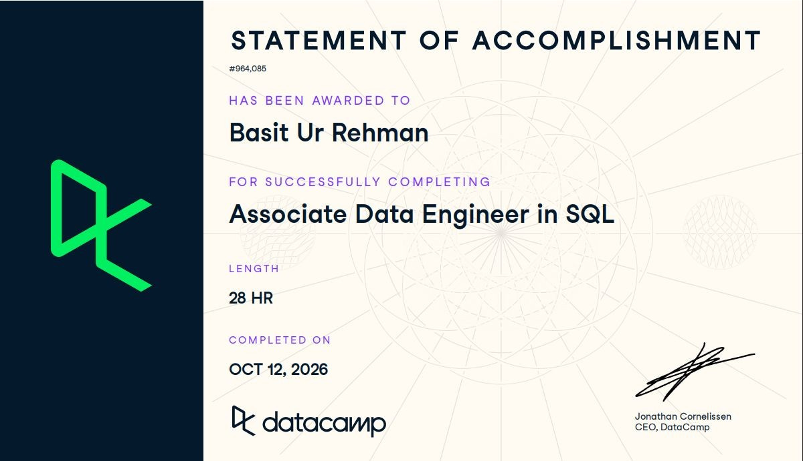
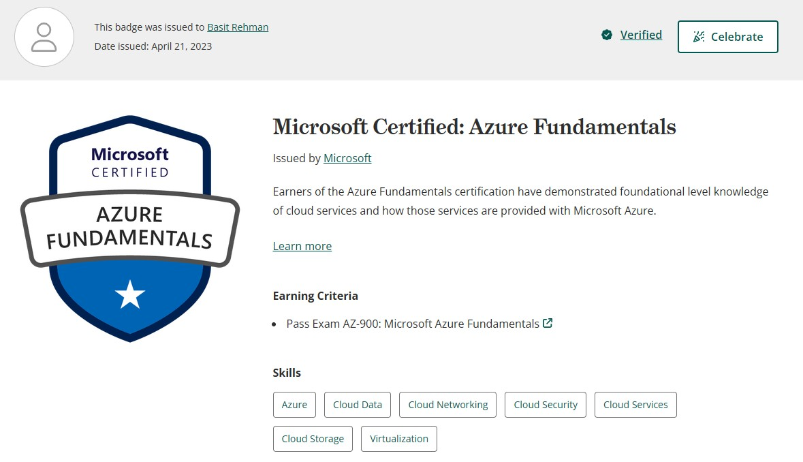
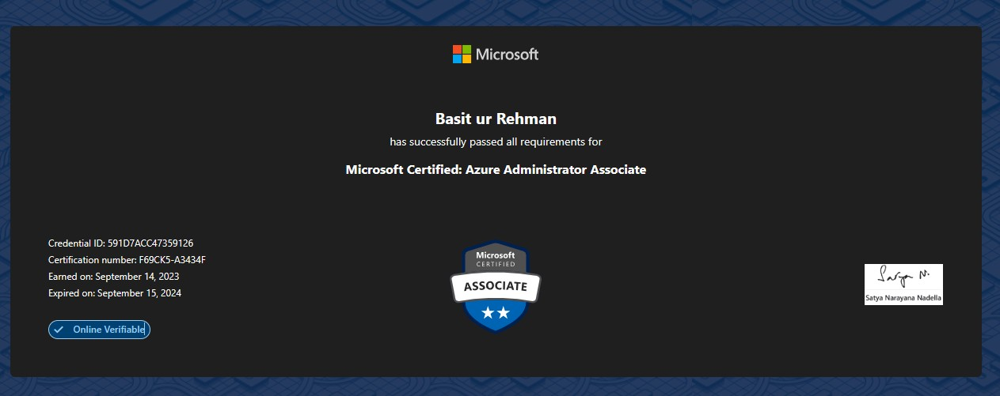
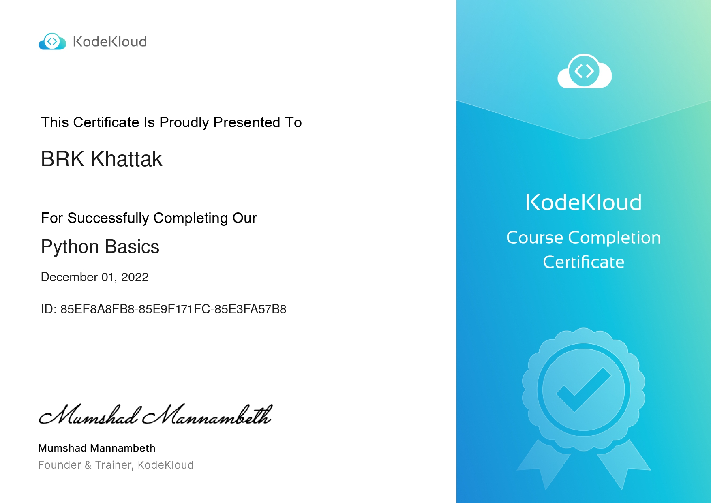
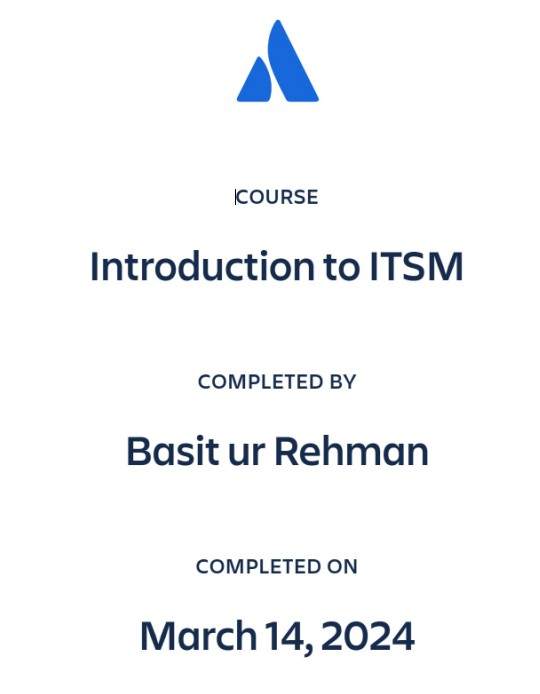

Data Engineer | MLOps : Building scalable Data Pipelines, MLOps & Cloud Infra.
Hi, I'm Basit ur Rehman. I bridge 4+ years of hands-on Cloud Infrastructure experience at u-blox with advanced Master's studies in Data Science & Computer Vision in Paris.
Basit ur Rehman
Data Engineer | MLOps Specialist
About Me
Combining industrial field experience with rigorous master's level studies in data engineering and intelligent systems.
M2 Student in Intelligent Systems & Computer Vision | Ex-Infrastructure Engineer (4+ Years)
Currently seeking a 6-month Master's End-of-Studies Internship (Stage de fin d'études) starting January / February 2027 in Whole France or Remote across Data Engineering, MLOps, or Cloud Architecture.
With over 4+ years of professional experience managing AWS/Azure hybrid infrastructure and automation pipelines at u-blox, I specialize in moving data models out of Jupyter Notebooks and building production-ready, containerized systems around them.
My academic background combines a B.S. in Computer Engineering, M1 coursework in Data Science & Analytics (EPITA), and a current M2 specialization in Intelligent Systems & Computer Vision (Université Sorbonne Paris Nord). This foundation allows me to bridge the gap between cloud infrastructure and machine learning handling every layer of the modern data stack from cloud orchestration to model deployment.
Jan / Feb 2027 · Whole France / Remote · Data Engineering, MLOps, Cloud Architecture
Education
A rigorous academic foundation spanning computer engineering, data science pipelines, and intelligent computer vision systems.
B.S. Computer Engineering
Lahore, Pakistan · Top Tech & Engineering University
Core foundation in computer systems architecture, embedded hardware programming, networking, data structures, and algorithms.
Data Science & Analytics
Paris, France
Specialized coursework in data engineering architectures, distributed data processing, advanced machine learning, and database management.
Systèmes Intelligents et Vision par Ordinateur (SIVO)
Paris, France
Advanced specialization in intelligent computer vision, neural networks, pattern recognition, spatial image processing, and deep learning algorithms.
Work History
Proven record of managing enterprise hybrid cloud infrastructure, database systems, and automating telemetry pipelines across international engineering teams.
Global Infrastructure Engineer
Permanent Role
Key Responsibilities & Achievements
- Cloud & Access Management: Managed hybrid cloud infrastructure across Azure (Entra ID/Azure AD, VMs, RBAC permissions) and AWS (EC2 instance provisioning, security groups, IAM roles), ensuring strict access control across global teams.
- On-Premises & Hypervisor Deployment: Executed on-premises server setups, hardware provisioning, hypervisor configurations (VMware ESXi, Hyper-V), and Linux/Windows OS deployments across international sites.
- Scripting & System Automation: Developed Python scripts to automate daily system health checks, log parsing, and routine administrative workflows.
- Workflow Automation (Jira/Confluence): Led Jira & Confluence administration; built custom workflows, JQL queries, and REST API automation scripts to streamline tracking, saving 15+ operational hours monthly.
- System Monitoring & Dashboards: Configured Grafana telemetry dashboards and automated log alerts to track real-time infrastructure performance and service availability.
- Server Migrations & Governance: Collaborated with senior engineering leads to migrate legacy on-premises workloads to hybrid cloud environments; served as CAB Administrator enforcing ITIL change management to ensure zero downtime.
Systems & Data Operations Engineer
Full-time Role
Key Responsibilities & Achievements
- Database Operations & SQL Maintenance: Executed relational database checks and SQL queries (PostgreSQL/MySQL) to audit data records, verify schema connectivity, and assist in operational data troubleshooting.
- Log Parsing & Diagnostic Scripting: Developed custom shell and Python diagnostic scripts to parse system logs, automate routine server health checks, and resolve network/authentication bottlenecks.
- Server Administration & Virtualization: Delivered L2 infrastructure support across Linux and Windows server environments; executed routine server provisioning, virtualization setups (VMware ESXi), and security patch management.
- Telemetry & Incident Data Metrics: Configured ITSM incident tracking workflows (ServiceNow) to structure operational logs and generate regular SLA performance and system uptime reports.
- Technical SOPs & Compliance: Drafted and maintained technical deployment checklists, standard operating procedures (SOPs), and system configuration guides to enforce infrastructure compliance.
Technical Skills Matrix
Comprehensive skill set across Cloud Engineering, Data Engineering, MLOps, and Infrastructure Operations.
Cloud Engineering
AWS, Azure & IaCData Engineering
Pipelines & WarehousingMLOps Engineering
Tracking & ServingInfrastructure & Ops
Virtualization & TelemetryFeatured Engineering Projects
AWS Healthcare Big Data & MLOps Platform
An event-driven Medallion (Bronze/Silver/Gold) data lake processing IoT telemetry and clinical batch records inside a private AWS VPC.
Semantic News Recommendation Platform
A multi-stage recommendation funnel on the Microsoft MIND dataset featuring sub-millisecond vector retrieval and diversity re-ranking.
House Prices Industrialized MLOps Pipeline
An enterprise-grade, leak-free machine learning pipeline refactored into a modular Python package with strict code quality standards and automated CI/CD.
HealthVision – End-to-End MLOps Medical Platform
An end-to-end clinical machine learning system with automated Airflow ingestion pipelines, schema validation, REST inference, interactive UI, and live Grafana monitoring.
Certifications & Training
Formal industry certifications and specialized data engineering training paths. (You can add certificate badge images named cert1.jpg, cert2.jpg, etc. in your project folder).

Associate Data Engineer in SQL
DataCamp · 30-Hour Path
Completed DataCamp's 30-hour Associate Data Engineer in SQL certification path. Key focus areas included Kimball dimensional modeling, Star/Snowflake schemas, row vs. columnar database tuning, ELT pipeline architectures, and query execution optimization.

Azure Administrator Associate
Microsoft · Credential ID: 591D7ACC47359126
Certified in implementing, managing, and monitoring identity, governance, storage, compute, and virtual networks in a cloud environment.

Azure Fundamentals (AZ-900)
Microsoft · Issued Apr 2023
Foundational knowledge of cloud concepts, core Azure services, security, privacy, compliance, and trust in cloud infrastructure.

Azure AI Fundamentals (AI-900)
Microsoft · Credential ID: I704-6462
Foundational understanding of machine learning and artificial intelligence workloads on Azure, computer vision, and NLP services.

Certified Python Entry-Level (PCEP)
KodeKloud · Credential ID: 85EF8A8FB8
Verified proficiency in Python programming fundamentals, data structures, conditional branching, loops, functions, and error handling.

Introduction to ITSM
Atlassian · Issued Mar 2024
Training in IT Service Management methodologies, ITIL change management, and incident workflows utilizing Jira Service Management.
Let's discuss your internship opportunity.
Seeking a 6-month End-of-Studies Master's Internship starting early 2027 in France. Drop me a message below or connect directly via email or GitHub.
Send a Direct Message
Fill out the form below and I'll get back to your inbox promptly.